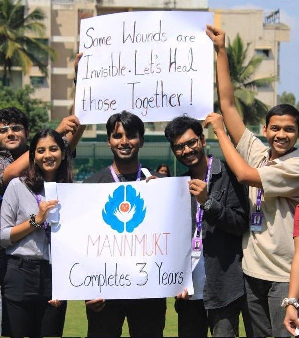
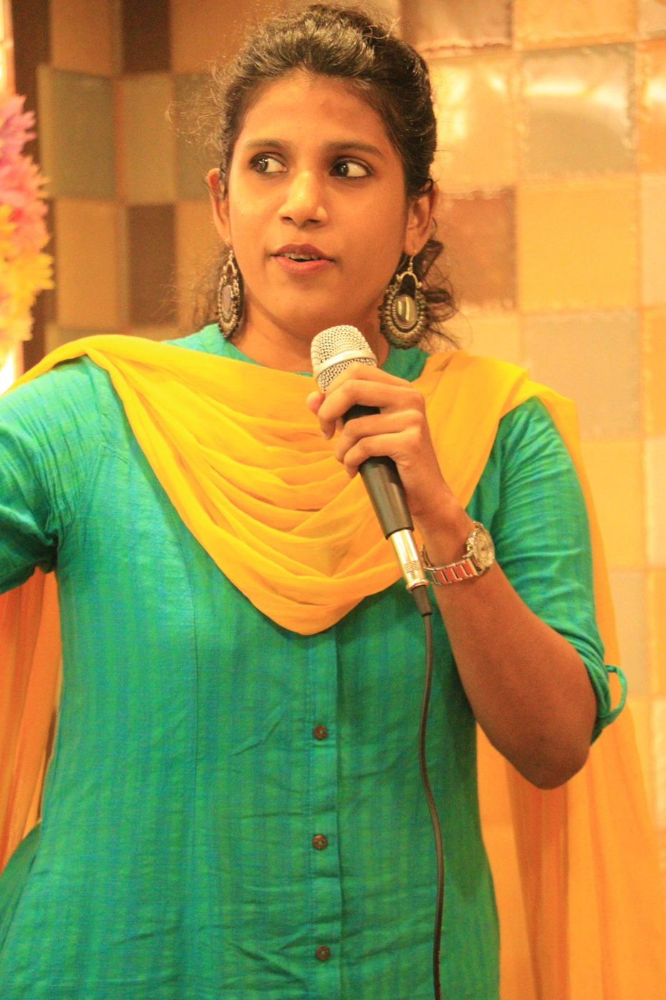
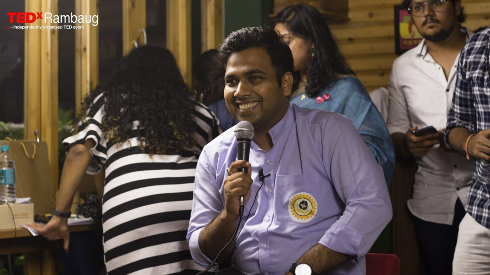

Some wounds are invisible.
Let's heal those together.
MannMukt builds spaces where mental health is spoken about openly, through workshops, listening circles, art and honest conversation.



We've been building spaces for mental health conversations since 2019.
MannMukt, literally a free mind, was founded in October 2019 with a clear purpose: to make mental health a normal part of everyday conversation in India. We work with communities, schools, colleges and organisations to reduce stigma and build real understanding.
Our approach is grounded in lived experience and clinical knowledge. We don't preach, we facilitate. We create rooms where people feel safe enough to speak, and heard enough to heal.
Safe spaces, many forms
Every format is designed for one thing: helping people talk about how they really are.
Awareness workshops
Interactive, evidence-informed sessions that build mental health literacy and challenge deep-rooted myths.
Listening circles
Small, judgement-free circles where people share, listen and realise they are not alone.
Art therapy & guided imagery
Painting, letter writing and guided imagery to express what words alone can't.
Campus campaigns
Placard drives and awareness days that get whole campuses talking about mental health.
Community events
Open meet-ups and conversations like #KaiseHo?, our mental health check with TEDxRambaug.
Partnerships
Programmes with schools, colleges, NGOs, startups and workplaces to extend reach and deepen impact.
The brain is an organ.
It can fall ill like any other part of the body. We don't hesitate to treat a broken bone or manage diabetes, so mental health deserves the same proactive, stigma-free care.
You wouldn't ignore a fever.
When your temperature spikes, you seek help. Mental health works the same way: timely support changes outcomes, and awareness is what makes that support possible.
Invisible ≠ imaginary.
Anxiety, depression and trauma don't show up on X-rays, but they are as real and as treatable as any physical condition. Recognition is the first act of care.
Come as you are
Our next gatherings. Everyone is welcome.
New dates are blooming soon
We're planning our next listening circles, workshops and community events. Follow us on Instagram to hear first, or invite us to run a session for your group.
Seven years of showing up
Bring MannMukt to your campus or workplace
Workshops, listening circles and awareness campaigns designed for your people.